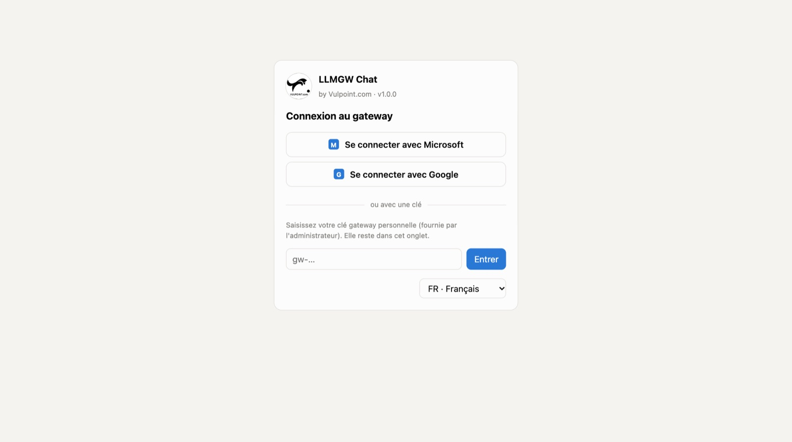
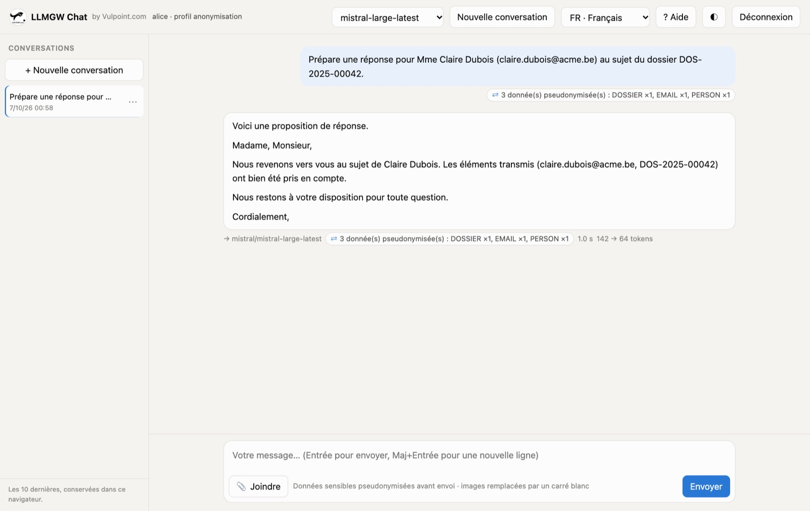
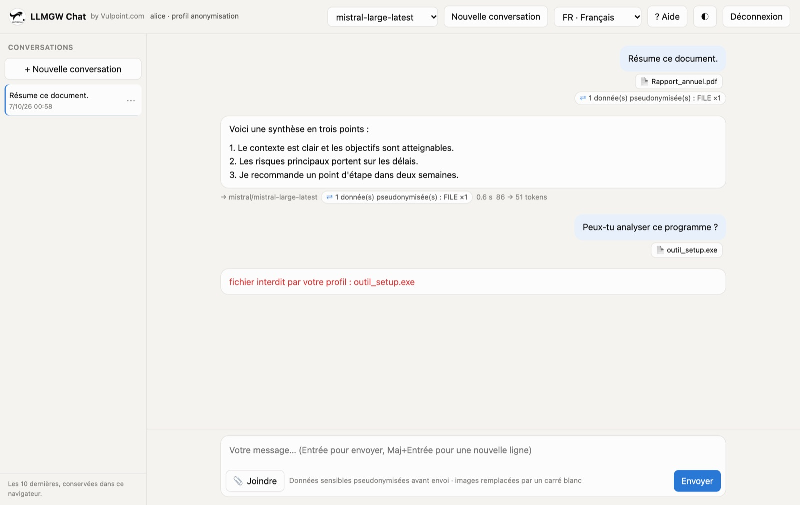
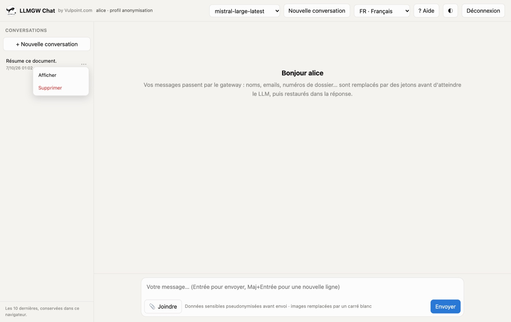

Utiliser le chat IA de l'organisation
Le chat vous donne accès aux modèles d'IA autorisés par votre organisation. Vos messages passent par une passerelle qui protège les données sensibles avant qu'elles ne quittent le réseau.
1À quoi sert le chat
Le chat fonctionne comme les assistants IA grand public : vous écrivez une question, l'IA répond. La différence, c'est que tout passe par la passerelle LLMGW de votre organisation :
- vous n'utilisez que les modèles autorisés pour votre profil ;
- les noms, emails, numéros de dossier et autres données sensibles sont remplacés par des jetons avant l'envoi à l'IA, puis remis en clair dans la réponse que vous lisez ;
- certains fichiers peuvent être remplacés ou refusés selon les règles de votre profil.
Vous n'avez rien à faire de particulier : la protection est automatique. Ce guide explique ce que vous voyez à l'écran et comment réagir à un message de la passerelle.
2Se connecter
Ouvrez l'adresse /chat de la passerelle (votre service informatique vous la communique). Deux façons de vous connecter :
- Avec votre compte de travail : bouton « Se connecter avec Microsoft » ou « Se connecter avec Google ». C'est la méthode recommandée ; la session dure 12 heures par défaut.
- Avec une clé personnelle (commence par
gw-), fournie par l'administrateur. Elle reste dans l'onglet du navigateur et disparaît à sa fermeture.
La liste en bas de la carte permet de choisir la langue dès cet écran.


Votre clé est personnelle. Ne la partagez pas et ne la collez pas dans un autre outil : tout ce qui est fait avec elle vous est attribué. En cas de doute, demandez une nouvelle clé à l'administrateur.
3L'écran
| Zone | Contenu |
|---|---|
| En-tête | votre nom et votre profil ; la liste des modèles autorisés ; « Nouvelle conversation » ; la langue ; « ? Aide » (ce guide) ; le thème clair ou sombre ; « Déconnexion » |
| Panneau de gauche | vos 10 dernières conversations (bouton ☰ pour l'afficher ou le masquer sur petit écran) |
| Centre | la conversation ; sous chaque message, le modèle utilisé, les données protégées, la durée et les tokens |
| Bas | la zone de saisie, le bouton « Joindre », le rappel de la politique de votre profil et « Envoyer » |
4Poser une question
- Choisissez un modèle dans la liste de l'en-tête. Les modèles sont regroupés par fournisseur ; votre choix est mémorisé.
- Écrivez votre message. Entrée envoie, Maj + Entrée passe à la ligne.
- La réponse s'affiche au fil de l'eau. Le bouton « Arrêter » interrompt une réponse trop longue.
- Pour changer de sujet, cliquez sur « Nouvelle conversation » : l'IA repart sans le contexte précédent.
L'IA ne garde pas de mémoire entre deux conversations ; dans une même conversation, elle reçoit l'historique des échanges à chaque question.
5Ce que la passerelle fait de vos données
Avant l'envoi, la passerelle repère les données sensibles et les remplace par des jetons. L'IA travaille sur les jetons ; la passerelle remet les vraies valeurs dans la réponse que vous lisez.
Le badge ⇄ « 3 donnée(s) pseudonymisée(s) : DOSSIER ×1, EMAIL ×1, PERSON ×1 » sous le message indique combien de valeurs ont été protégées, et de quels types.


Selon votre profil, certaines données peuvent être interdites (par exemple un numéro de registre national ou un IBAN dans un profil « santé ») : la question est alors refusée, rien n'est envoyé, et un message vous l'indique. Reformulez sans la donnée.
6Joindre des documents et des images
Cliquez sur « Joindre » ou glissez des fichiers dans la zone de saisie. Formats acceptés : texte (txt, md, csv, json, xml, html, log, yaml), PDF, Word (docx) et images. Le texte des documents est extrait dans votre navigateur (jusqu'à 300 000 caractères, au-delà le document est tronqué), puis passe par la passerelle comme vos messages.
Si un PDF utilise une police mal encodée, certaines lettres sont extraites sous forme de symboles (« J@an S©basti@ ») : le chat affiche alors « ⚠ texte extrait abîmé » à côté du document. La passerelle masque quand même les noms concernés, mais l'IA recevra un texte de mauvaise qualité ; préférez une autre version du document (Word, PDF réexporté) ou copiez le passage utile dans le message.
Votre profil fixe ce qui arrive à chaque type de fichier :
| Règle du profil | Ce que vous voyez | Ce que l'IA reçoit |
|---|---|---|
| transmis | une réponse normale | le document ou l'image |
| carré blanc | une réponse normale ; l'IA indique souvent qu'elle ne voit pas le contenu | un carré blanc à la place de l'image, ou « [contenu remplacé par le gateway] » à la place du texte du document |
| bloqué | le message « fichier interdit par votre profil : nom du fichier » | rien : la question n'est pas envoyée |
Le rappel en bas de l'écran indique la règle de votre profil pour les images (par exemple « images remplacées par un carré blanc »).


Les fichiers sont journalisés. Pour la plupart des règles, la passerelle consigne le nom du fichier, sa taille et son empreinte pendant 30 jours (jamais son contenu). Certains fichiers bloqués déclenchent aussi une alerte au responsable sécurité. Ne joignez que ce dont l'IA a besoin.
7Historique des conversations
- Les 10 dernières conversations s'affichent dans le panneau de gauche, la plus récente en haut. Elles sont conservées dans votre navigateur uniquement, pas sur le serveur.
- Cliquez sur une conversation pour la rouvrir, ou utilisez le menu ⋯ : « Afficher » ou « Supprimer ».
- Les images ne sont pas conservées (trop volumineuses) : une conversation rouverte n'affiche que leur nom.
- Sur un autre ordinateur ou un autre navigateur, l'historique est vide.


Sur un ordinateur partagé, supprimez vos conversations et déconnectez-vous en fin de session.
8Langue et thème
- Langue : la liste de l'en-tête bascule l'interface en anglais, français ou néerlandais. Vous pouvez écrire à l'IA dans la langue de votre choix, quelle que soit celle de l'interface.
- Thème : le bouton ◐ alterne entre clair et sombre.
- Déconnexion : ferme la session SSO ou oublie la clé de l'onglet.
9Messages d'erreur
| Message | Signification | Que faire |
|---|---|---|
| fichier interdit par votre profil : … | le type de fichier est bloqué pour votre profil | retirer le fichier, ou en copier l'extrait utile dans le message s'il ne contient pas de données interdites |
| requête bloquée par la politique de données : … | une donnée interdite par votre profil a été détectée (le type est indiqué) | reformuler sans cette donnée |
| quota … atteint | vous avez atteint votre limite de requêtes ou de tokens | attendre la minute, le jour ou le mois suivant, ou demander une hausse à l'administrateur |
| modèle « … » non autorisé | ce modèle n'est pas ouvert à votre profil | choisir un autre modèle dans la liste |
| aucun LLM cible disponible | les fournisseurs de votre profil sont momentanément indisponibles | réessayer un peu plus tard, puis prévenir le support |
| Clé refusée | clé inconnue ou utilisateur bloqué | vérifier la clé ou contacter l'administrateur |
| aucun profil de chat ne vous est attribué | votre compte SSO n'est rattaché à aucun profil | contacter l'administrateur |
10Bonnes pratiques
- Donnez le contexte : rôle, objectif, format attendu (« en 5 points », « ton formel »). Les réponses sont meilleures.
- Limitez les données personnelles au strict nécessaire, même si la passerelle les protège : la détection automatique n'est pas infaillible, surtout pour un nom isolé jamais vu.
- Vérifiez les réponses : l'IA peut se tromper ou inventer. Relisez toujours avant de transmettre un texte.
- Si une réponse contient un jeton entre guillemets («PERSON_1»), l'IA l'a modifié et la passerelle n'a pas pu le restaurer : remplacez-le à la main ou reposez la question.
- Pour un sujet nouveau, ouvrez une nouvelle conversation : l'IA est plus précise et chaque question coûte moins de tokens.
11Questions fréquentes
Le fournisseur d'IA voit-il mes données ?
Il voit votre texte, sauf les données sensibles détectées, remplacées par des jetons. La correspondance entre jetons et valeurs ne quitte pas la passerelle.
Mes conversations sont-elles enregistrées ?
L'historique est stocké dans votre navigateur. La passerelle enregistre des statistiques (volumes, durées, nombre de données protégées) sans le contenu, et le journal des fichiers (nom, taille, empreinte). Un mode de dépannage temporaire peut être activé par l'administrateur ; il est signalé dans le dashboard d'administration.
Pourquoi un modèle n'apparaît-il pas dans la liste ?
Seuls les modèles autorisés pour votre profil et réellement joignables sont proposés.
Puis-je utiliser un autre outil (ChatGPT, Claude…) directement ?
Non : les accès directs aux fournisseurs sont bloqués par la politique IA de l'organisation. Les outils compatibles (Claude Code, agents, scripts) se raccordent à la passerelle avec une clé d'application ; voir la documentation d'administration.